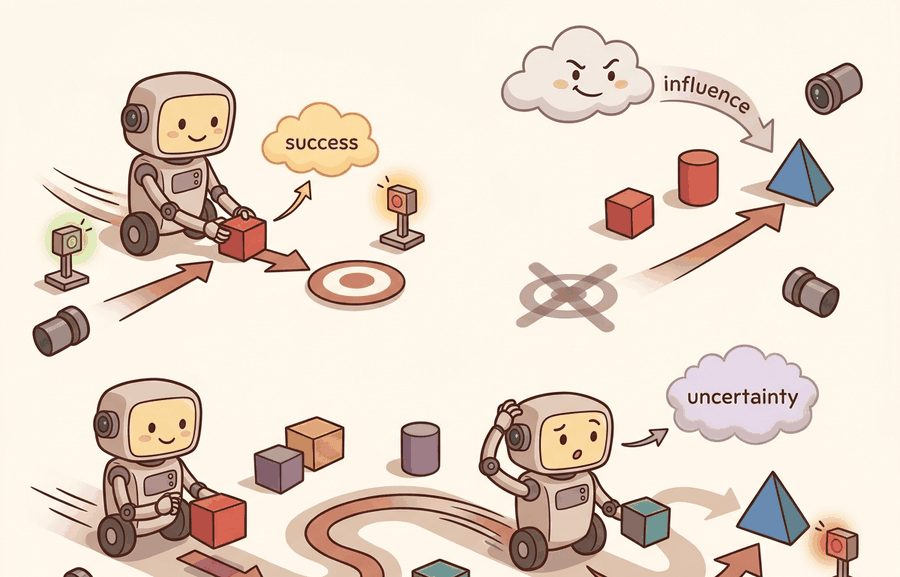
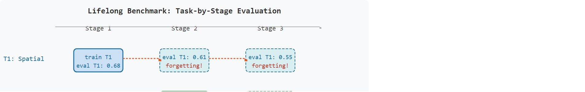

"A lifelong benchmark does not ask if the agent learned. It asks what the agent forgot, and what it was never given time to relearn."
A Continual Learning Evaluator

This section assumes familiarity with single-task manipulation benchmarks from section 12.2, particularly the concepts of task panel freezing, seed policy, and success predicate that are introduced there. The language-conditioning ideas developed here recur in Part 7: section 31.3 examines how referring expressions are grounded in perception, and section 31.5 extends language-conditioned task planning to ambiguity resolution and clarification. If you are primarily interested in how skills chain across tasks rather than how benchmarks measure that chaining, section 26.2 covers the options framework for hierarchical skill composition.
A robot that can open a drawer on command is useful. A robot that can open a drawer, then hear "now stack the block," then hear "turn off the light," without forgetting how the drawer works, is transformative. That gap, between single-task competence and language-driven lifelong learning, is exactly what LIBERO, CALVIN, and Meta-World were built to expose. Pretrained policies are getting better fast, yet leaderboard numbers keep hiding whether a method truly transfers or simply memorizes. Right now, as foundation models enter robotics, pinning down what these benchmarks actually measure, and how to run them without contaminating comparisons, has never mattered more. You will learn to set up all three suites, interpret their splits correctly, and produce forgetting diagnostics that stand up to scrutiny.
Imagine a robot that aces drawer-opening on Monday, learns to flip a light switch on Tuesday, and by Wednesday can no longer find the drawer handle it once mastered: that silent collapse is exactly what LIBERO, CALVIN, and Meta-World are engineered to catch. LIBERO tests knowledge transfer across language-conditioned manipulation suites, CALVIN tests long-horizon language-conditioned tabletop behavior, and Meta-World tests multi-task and meta-learning across a structured set of manipulation tasks. As Figure 12.3A suggests, the evidence you need is the whole learning diary, because final success alone cannot show whether earlier skills were retained or quietly lost.
Evaluate learning over distributions, not isolated episodes. That means freezing task order, language templates, held-out goals, adaptation budget, replay budget, seeds, and the rule for measuring forgetting.
For Lifelong and language-conditioned: LIBERO, CALVIN, Meta-World, treat the leaderboard as an instrument: it is interpretable only when the benchmark isolates the capability, fixes the protocol, and records rerunnable context.
A lifelong benchmark is a sequence of task distributions rather than one static test set. Let $S_{k,t}$ be success on task family $k$ after training stage $t$. A strong final average can hide catastrophic forgetting of earlier skills if earlier tasks lose success after later training, so the evidence artifact should include the whole task-by-stage matrix, not only the last column.
Catastrophic forgetting matters physically because a deployed robot must retain every skill it was trained on. Suppose a Franka arm learns drawer-opening, then trains on a new light-switch task and loses the drawer skill. It fails in the field, and the new training run shows no visible signal of that loss. A task-by-stage matrix catches this failure; a single final-success number does not. Reporting only the last column therefore produces misleading transfer claims.
Figure 12.3B below makes this concrete: it renders the task-by-stage evaluation matrix as a small grid of training and re-evaluation boxes, with orange arrows tracing exactly where success drops as new tasks are trained.
The matrix shows that forgetting happens, but not yet why weights trained on one task degrade on another; the mechanism behind that drop, and the regularization tools used to slow it, are introduced next.

The mechanism is gradient interference. Training on new task data shifts shared weight values to fit the new distribution. Those same weights encoded earlier skills, so earlier skill responses degrade. Think of it like tuning a radio dial: moving to the new station does not erase the old frequency from the spectrum, but the receiver can no longer pick it up because its resonant parameters now point elsewhere. The network has no explicit memory boundary. To anchor the important parameters during each new training stage, you need replay transitions or regularization terms. Elastic Weight Consolidation (EWC) is one such regularizer: it penalizes changes to parameters that mattered most for earlier tasks.
Language conditioning adds another split boundary. A policy can overfit to instruction templates, object names, or goal phrasing while failing to ground new combinations. The evaluation must say whether language, objects, spatial relations, goals, or task families are held out.
The mechanism is transfer under controlled exposure. LIBERO separates kinds of knowledge shift, such as objects, spatial relations, goals, and mixtures. CALVIN emphasizes language-conditioned task sequences. Meta-World separates multi-task training from meta-learning adaptation, with held-out tasks in the meta-learning settings. Each suite needs a different split audit. Two constructs recur across these audits: forward transfer, how much earlier training helps a later task, and backward transfer, how much later training hurts an earlier one; the Algorithm box below gives both a precise formula.
LIBERO defines 130 manipulation tasks split across four knowledge-shift suites (LIBERO-Spatial, LIBERO-Object, LIBERO-Goal, LIBERO-Long), each with 10 demonstrations per task. The suite names describe what varies between tasks: Spatial varies object layout, Object varies which objects appear, Goal varies the target state, and Long chains several such shifts into one long-horizon task. CALVIN evaluates chains of up to five language-conditioned subtasks in sequence on a tabletop with a sliding door, drawer, and light switch; the primary metric is the mean number of consecutive subtasks completed before failure (published baselines on the ABCD-D split, where the letters denote which of four environment variants supply training data versus the held-out test environment, reached roughly 1.0 to 4.2 subtasks depending on the method as of 2023, with subsequent work pushing beyond 4.5 by 2024). Meta-World MT50 trains one policy across 50 manipulation tasks sharing an observation and action interface, while ML45 reserves 5 tasks entirely for held-out meta-learning evaluation, with adaptation limited to a fixed number of rollout episodes.
Consider a specific case for CALVIN: a policy must hear "push the red block right," complete that subtask, then hear "open the drawer," then "turn on the light." Each instruction is sampled from a held-out template set. If the policy scores 2.1 mean tasks, it succeeds on roughly the first two subtasks before failing at the third. A score of 4.2 means it nearly completes all five. This chain-completion metric reveals failure points that a single-task success rate would not expose, because a policy that memorizes individual instructions can still fail to maintain state across the chain.
To make this matrix-over-final-number argument concrete rather than rhetorical, the next step turns the task-by-stage idea into a few lines of code that any reviewer can rerun.
Code Fragment 1 computes a simple forgetting diagnostic. A method that improves the final task while damaging earlier tasks needs a different claim than a method that retains old skills and transfers to new ones.
# Measure forgetting from a task-by-stage success matrix.
# Rows are task families, columns are training stages after each
# new family has been introduced in the same order for every method.
success_by_stage = {
"spatial": [0.68, 0.61, 0.55],
"object": [0.00, 0.64, 0.58],
"goal": [0.00, 0.00, 0.71],
}
forgetting = {}
for task, scores in success_by_stage.items():
best_before_final = max(scores[:-1])
if best_before_final == 0:
forgetting[task] = "not_previously_trained"
else:
forgetting[task] = round(best_before_final - scores[-1], 2)
print(forgetting)success_by_stage matrix preserves the evidence that a final average would hide. The forgetting values show how much success on earlier task families dropped after later training stages, which is central for LIBERO-style lifelong claims.Trace the forgetting computation on the three-family LIBERO run above, one task family at a time, using the actual numbers from success_by_stage.
Spatial has scores [0.68, 0.61, 0.55]. The loop slices off the last value, leaving scores[:-1] = [0.68, 0.61], then takes best_before_final = max(0.68, 0.61) = 0.68. Since 0.68 is not 0, forgetting is 0.68 - 0.55 = 0.13. The spatial skill peaked at 0.68 in stage 1 and ended at 0.55, so 13 percentage points of competence were lost.
Object has scores [0.00, 0.64, 0.58]. Here scores[:-1] = [0.00, 0.64] and best_before_final = max(0.00, 0.64) = 0.64. Forgetting is 0.64 - 0.58 = 0.06. The object skill appeared only in stage 2 (the 0.00 in stage 1 means it was not yet trained) and lost 6 points by the final stage.
Goal has scores [0.00, 0.00, 0.71]. Now scores[:-1] = [0.00, 0.00] and best_before_final = max(0.00, 0.00) = 0.00. The guard if best_before_final == 0 fires, so the family is labeled "not_previously_trained": goal was introduced in the final stage, so there is no earlier peak to forget from. The final dictionary is exactly {'spatial': 0.13, 'object': 0.06, 'goal': 'not_previously_trained'}.
The maintained suites provide task definitions and loaders, but they do not protect you from unfair transfer comparisons. The evaluation script must enforce the same task order, adaptation steps, replay buffer, prompt templates, demonstration access, and seed list for every method.
Knowing that the loaders alone will not enforce a fair comparison, the following recipe spells out the protocol you must freeze by hand before any lifelong number is trustworthy.
Input: policy $\pi_\theta$, task sequence $\mathcal{T} = (T_1, T_2, \ldots, T_K)$, instruction templates $\mathcal{L}_k$ per family, adaptation budget $A$, replay budget $R$, seed set $\mathcal{S}$
Output: task-by-stage success matrix $S \in \mathbb{R}^{K \times K}$, per-family forgetting $\Delta_k$, forward transfer $\text{FT}$
So far: the algorithm has produced three distinct numbers from the same matrix $S$, per-family forgetting $\Delta_k$, forward transfer $\text{FT}$, and backward transfer $\text{BT}$, each answering a different question about the same training run before any failure is labeled or any result is saved.
For Lifelong and language-conditioned: LIBERO, CALVIN, Meta-World, compare only metrics co-computed in one benchmark pass with the same task panel, wrappers, seed policy, success definition, and logged failure labels.
The common mistake is comparing methods with different task orders or different adaptation budgets. A learner that sees more replay data, extra prompt variants, or additional tuning episodes is not being compared on the same lifelong benchmark, even if the final success table uses the same task names.
A common assumption is that a high final average success rate on LIBERO, CALVIN, or Meta-World proves the agent has mastered all trained skills. This is wrong in an embodied AI context because gradient updates for new tasks overwrite shared weights that encoded earlier manipulation skills, so earlier competence can collapse silently while the final-stage average stays high by riding the newest task. A robot that scores 0.85 on a three-family LIBERO run but dropped from 0.68 to 0.30 on the first family after the third training stage has catastrophically forgotten a skill it will need in deployment. The correct mental model is to treat the benchmark as a full task-by-stage matrix: forward transfer, backward transfer, and per-family forgetting are all distinct constructs, and final average success answers only one of them.
A policy that scores well on the final stage but has silently lost its first skill is not a lifelong learner; it is a specialist wearing a borrowed credential.
A team evaluating LIBERO, CALVIN, or Meta-World should log task family, task order, language instruction, held-out condition, adaptation steps, replay source, seed, per-stage success, and final success. Those fields reveal whether a method transfers knowledge, memorizes prompt templates, or forgets earlier skills.
When Physical Intelligence trained its pi0 vision-language-action model, it validated lifelong retention on LIBERO by reporting per-suite success across LIBERO-Spatial, Object, Goal, and Long rather than a single average, exactly the task-by-stage discipline described here. This let the team show that fine-tuning a pretrained backbone preserved early-suite skills instead of trading them away for later-suite gains, a claim a final-average number could never support.
A lifelong benchmark is a diary, not a trophy photo. The final row matters, but the intermediate pages tell you whether the robot kept its old skills.
Foundation-model policies on lifelong benchmarks (2024-2025). Large vision-language-action models are now being evaluated directly on LIBERO and CALVIN rather than trained from scratch per suite. OpenVLA (Kim et al., 2024, Stanford) fine-tunes a 7B-parameter Vision-Language-Action (VLA) model on LIBERO task families and shows that a frozen language backbone reduces catastrophic forgetting relative to standard behavioral cloning, but the forgetting diagnostic must still be reported as a full task-by-stage matrix because final averages hide early-family collapse.
Parameter-efficient continual learning for manipulation (2024-2026). LoRA (Low-Rank Adaptation, a technique that freezes the pretrained weights and trains only a small pair of low-rank update matrices) and adapter layers are being inserted into pretrained Diffusion Policy and ACT transformers so that new task families update only a small set of parameters while earlier skill weights are frozen. TAIL (Zhang et al., 2024) applies this strategy on LIBERO-Long and, in the paper's reported runs, reduces forgetting on the first two task families by more than 30 percentage points compared to a full fine-tune baseline, while typically keeping inference latency below the 20 ms control loop budget.
Long-horizon language-conditioned real-robot evaluation (2025-2026). Groups including Physical Intelligence (pi0, Black et al., 2024) and the Berkeley Robot Learning Lab (RoboVQA follow-ons, 2025) are running CALVIN-style five-step instruction chains on physical arms, reporting that sim-to-real transfer typically drops the mean consecutive-subtask score by 40-60 percent when wrist-camera lighting is not matched between training and deployment environments.
Open problem for a PhD student. No standardized protocol exists for measuring forgetting when the policy backbone is partially frozen via parameter-efficient fine-tuning: the task-by-stage matrix is defined for full-weight updates, but the effective capacity being changed per stage differs when only adapter weights are updated. Defining a capacity-normalized forgetting metric that is comparable across full fine-tune, LoRA, and frozen-backbone settings, and validating it on LIBERO and CALVIN with at least three seed runs each, would close a gap that currently makes LoRA-based continual learning results incomparable to standard baselines.
Can you name the task order, held-out condition, language-template split, adaptation budget, replay budget, seed list, per-stage metric, and forgetting measure? If not, the experiment boundary is still too vague.
Lifelong and language-conditioned benchmarks become useful when they expose the sequence of learning, not only the end state. A LIBERO result should show which knowledge shift was tested. A CALVIN result should show how language-conditioned chains were sampled and scored. A Meta-World result should say whether it evaluates multi-task training or adaptation to held-out tasks.
Together, the Concrete Scale callout, the Transfer Benchmark Audit Fields table, and the Practical Recipe above give you a checklist for interpreting a reported split on any of the three suites: which knowledge-shift or chain-length axis it varies, which fields the protocol must freeze, and which forgetting diagnostic accompanies the final number.
Separate final competence from learning dynamics. Final success asks whether the policy can solve the last evaluation panel. Forward transfer asks whether earlier training helps later tasks. Backward transfer and forgetting ask whether later training preserves earlier skills. These are different constructs and must be co-computed from one task-by-stage artifact.
Forward transfer is like building a base layer of fitness before a sport-specific season. A swimmer who spent three months on core conditioning arrives at swim camp able to hold technique through a long set, not because swimming was practiced yet, but because the earlier training built supporting capacity. In a lifelong benchmark, a policy that learned spatial-relation tasks before goal tasks may reach higher accuracy on goal tasks faster, because shared weight patterns from spatial reasoning carry over. Measuring final-season race times alone never tells you whether the off-season conditioning was what made the difference.
| Suite | Primary construct | Protocol detail to freeze |
|---|---|---|
| LIBERO | Lifelong robot learning and knowledge transfer under language-conditioned manipulation tasks | Task suite, order, prompt templates, replay budget, adaptation budget, and forgetting metric. |
| CALVIN | Long-horizon language-conditioned tabletop behavior | Instruction distribution, chain length, start states, horizon, success predicate, and seed list. |
| Meta-World MT settings | Multi-task learning across manipulation tasks | Task set, shared observation/action interface, per-task success, and aggregation rule. |
| Meta-World ML settings | Meta-learning and adaptation to held-out tasks or goals | Train/test task split, support episodes, adaptation steps, and evaluation episodes. |
| Language-conditioned variants | Grounding instructions into manipulation behavior | Template split, paraphrase access, object vocabulary, and held-out language-object combinations. |
A robust transfer benchmark starts with a schedule file listing each training stage, task family, prompt set, replay source, adaptation budget, and evaluation panel. Every method reads the same schedule, tying the comparison to learning dynamics rather than run-specific choices.
Code Fragment 2 records a transfer schedule. This is the file you want reviewers to inspect before they trust a lifelong-learning number.
# Define one transfer schedule shared by every compared method.
# This schedule fixes task order, adaptation budget, replay budget,
# and held-out evaluation so final averages are construct-matched.
from dataclasses import dataclass, asdict
@dataclass
class TransferSchedule:
suite: str
task_order: tuple[str, ...]
heldout_condition: str
adaptation_steps: int
replay_budget: int
seeds: tuple[int, ...]
def as_row(self) -> dict[str, object]:
return asdict(self)
schedule = TransferSchedule(
suite="LIBERO",
task_order=("spatial", "object", "goal"),
heldout_condition="new_language_object_combinations",
adaptation_steps=0,
replay_budget=200,
seeds=(0, 1, 2),
)
print(schedule.as_row())TransferSchedule makes task order and adaptation budget explicit before any lifelong result is reported. The heldout_condition field tells the reader whether the number tests new language-object combinations, new goals, new tasks, or another transfer boundary.Expected output: the printed schedule should expose task order, held-out condition, adaptation budget, replay budget, and seeds. If two methods use different schedules, their final success values do not belong in one comparison.
When a lifelong or language-conditioned experiment fails, inspect the matrix before changing the model. A low final average may come from one hard task family, a prompt-grounding failure, forgetting of earlier tasks, insufficient adaptation budget, or a controller failure unrelated to transfer. The failure label should say which one.
Lifelong and language-conditioned benchmarks are useful when they report task order, held-out conditions, adaptation budget, replay budget, per-stage success, and forgetting from one shared evaluation schedule.
Design a LIBERO, CALVIN, or Meta-World comparison for a transfer claim. Specify the task order, held-out condition, adaptation budget, replay budget, seed list, and the forgetting metric you would report.
Goal: empirically reproduce the task-by-stage forgetting signal from Figure 12.3B by training one policy sequentially on a few Meta-World tasks and re-evaluating every earlier task after each new one.
Tools needed: metaworld (the MT benchmark suite), gymnasium, and either stable-baselines3 (SAC or PPO) or a short custom behavioral-cloning loop. A laptop CPU is enough if you cap rollouts; install with pip install metaworld gymnasium stable-baselines3.
Procedure: pick three MT10 tasks (MT10 is the Meta-World multi-task variant covering 10 of its manipulation tasks) in a fixed order (for example reach-v2, push-v2, pick-place-v2). Train the agent on task 1 for a fixed step budget, evaluate success on task 1 over 20 seeded episodes, then continue training the same weights on task 2, and now evaluate on both task 1 and task 2. Repeat for task 3, building the full lower-triangular task-by-stage success matrix.
What to vary: the training step budget per stage, the task order, and whether you mix in a small replay buffer of old-task transitions during each new stage.
What to observe: watch the diagonal (just-trained success) stay high while the off-diagonal earlier-task entries drop. Compute per-family forgetting as peak-minus-final and confirm that adding even a small replay buffer shrinks it. You will see directly why a final-stage average hides the collapse of the first skill.
Beginner (weekend): Build a forgetting monitor for LIBERO-Spatial using Gymnasium and the official LIBERO loader: train a simple MLP policy on three task families in sequence, record the task-by-stage success matrix after each stage, and plot the per-family forgetting values. The key challenge is freezing the task order and prompt templates so the matrix reflects learning dynamics rather than run-specific choices. Intermediate (1-2 weeks): Implement an experience-replay buffer on top of a LeRobot Diffusion Policy trained on CALVIN's ABCD-D split: store a fixed number of transitions from each completed subtask family, replay them during subsequent stages, and compare mean consecutive-subtask completion against the no-replay baseline. The key challenge is balancing replay budget against new-task data so earlier skill retention improves without slowing convergence on the new instruction distribution. Intermediate (1-2 weeks): Adapt the Meta-World MT10 suite in MuJoCo to test a language-conditioned policy by prepending a CLIP (Contrastive Language-Image Pretraining, a model that embeds text and images into a shared vector space) text embedding of each task name to the observation vector, training with Gymnasium's vectorized environments for parallel rollouts, and reporting per-task success alongside the aggregate to show which manipulation primitives transfer and which do not. The key challenge is constructing a held-out language-object combination that the policy has never seen during training so the evaluation tests true grounding rather than template memorization.
Section 12.4 → moves from transfer schedules to long-horizon household tasks, where predicate progress and failure points must be saved with final success.
James, S. et al. (2019). "RLBench: The Robot Learning Benchmark and Learning Environment." arXiv.
RLBench frames a large set of vision-guided manipulation tasks with demonstrations and task variation. It is useful for readers studying few-shot, multi-task, and manipulation benchmark design. Readers should connect this source to lifelong and language-conditioned: libero, calvin, meta-world when deciding what is reusable, what is benchmark-specific, and what must be remeasured.
ManiSkill Contributors. "ManiSkill Documentation."
ManiSkill provides manipulation tasks, demonstrations, GPU-parallel workflows, and documentation for robot-learning experiments. It is relevant when this section asks how benchmark design turns simulator capability into comparable evidence. Readers should connect this source to lifelong and language-conditioned: libero, calvin, meta-world when deciding what is reusable, what is benchmark-specific, and what must be remeasured.
RoboCasa Team. "RoboCasa Documentation."
RoboCasa documents everyday manipulation tasks and simulation assets, including the 2024 release lineage and later RoboCasa365 expansion. Readers should use it to study how task diversity and environment generation affect benchmark claims. Readers should connect this source to lifelong and language-conditioned: libero, calvin, meta-world when deciding what is reusable, what is benchmark-specific, and what must be remeasured.
Mandlekar, A. et al. "robomimic Documentation."
robomimic provides datasets and algorithms for learning from demonstrations. It matters here because benchmark evaluation often depends as much on dataset format and split discipline as on simulator physics. Readers should connect this source to lifelong and language-conditioned: libero, calvin, meta-world when deciding what is reusable, what is benchmark-specific, and what must be remeasured.
Stanford Vision and Learning Lab. "BEHAVIOR-1K."
BEHAVIOR-1K grounds household embodied AI tasks in human needs and long-horizon mobile manipulation. It gives benchmark designers a concrete example of task suites that go beyond isolated tabletop success rates. Readers should connect this source to lifelong and language-conditioned: libero, calvin, meta-world when deciding what is reusable, what is benchmark-specific, and what must be remeasured.